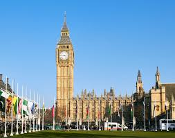

Символ Лондона
Биг Бен и Вестминстерский дворец
Легендарная часовая башня высотой 96 метров, официальное название — Башня Елизаветы. Часы имеют 4 циферблата диаметром 7 метров каждый. Входит в комплекс Вестминстерского дворца — места заседаний британского парламента с 1295 года.
История